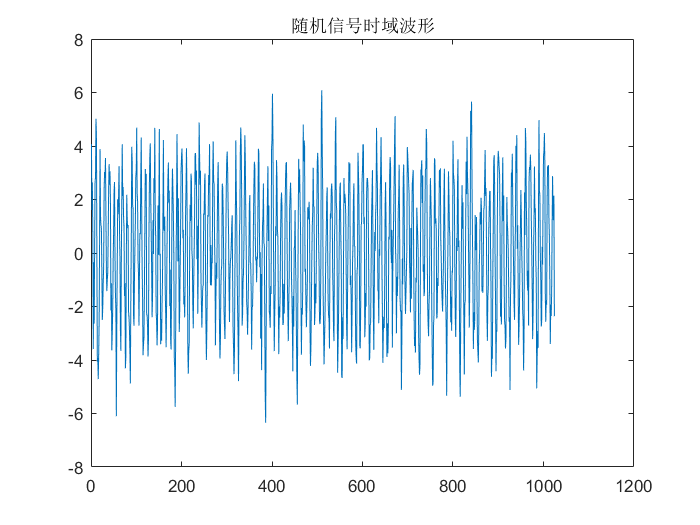
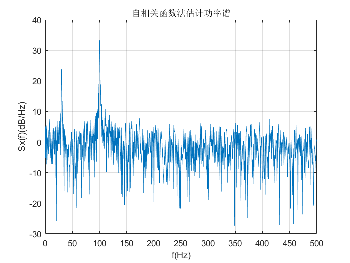
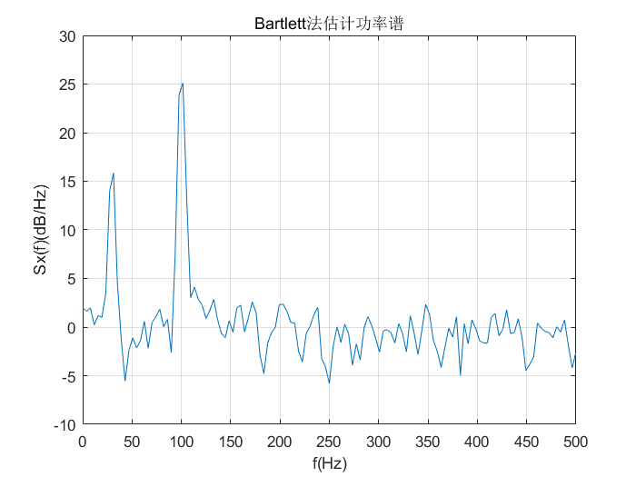
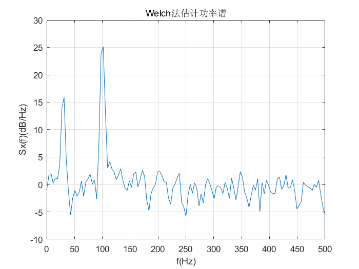
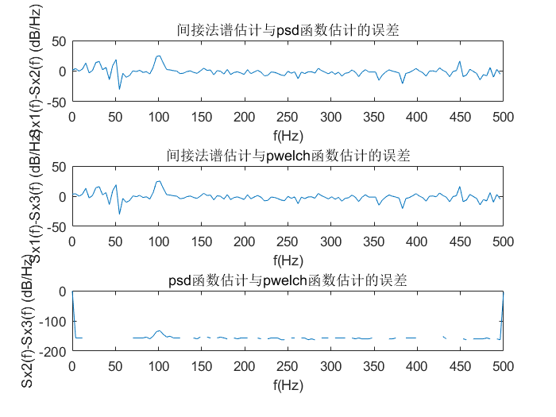

task2_2
Contents
配置环境
clear all; close all; clc;
生成随机信号
%两个带随机相位的单谱信号与白噪声之和 N=1024;fs=1000; %序列长度和采样频率 t=(0:N-1)/fs; %时间序列 fai=random('unif',0,2*pi,1,2); %产生2个[0，2pi]内均匀随机数 xn=cos(2*pi*30*t+fai(1))+3*cos(2*pi*100*t+fai(2))+randn(1,N); %产生含噪声的随机序列 figure,plot(xn); title('随机信号时域波形')
间接法谱估计
Rxx=xcorr(xn,'biased'); %估计自相关函数Rxx Sx1=abs(fft(Rxx)); %对Rxx进行FFT得到功率谱 f=(0:N-1)*fs/N/2; %频率轴坐标 figure(1); plot(f,10*log10(Sx1(1:N)));grid on; %用dB/Hz做功率谱单位，画图 xlabel('f(Hz)'); ylabel('Sx(f)(dB/Hz)'); title('自相关函数法估计功率谱');
内置函数psd
Nseg=256; %分段间隔为256 window=hanning(Nseg); %汉宁窗 noverlap=Nseg/2; %重叠点数为128 f=(0:Nseg/2)*fs/Nseg; %频率轴坐标 Sx2=psd(xn,Nseg,fs,window,noverlap,'none'); %psd函数估计功率谱 figure(2); plot(f,10*log10(Sx2));grid on; xlabel('f(Hz)'); ylabel('Sx(f)(dB/Hz)'); title('Bartlett法估计功率谱');
警告: PSD has been replaced by SPECTRUM objects. PSD still works but may be removed in the future. Use SPECTRUM (or its functional form PWELCH) instead.
内置函数pwelch
Sx3=pwelch(xn,window,128,Nseg,fs,'onesided')*fs/2; figure(3); %Welch函数估计功率谱 plot(f,10*log10(Sx3));grid on; xlabel('f(Hz)'); ylabel('Sx(f)(dB/Hz)'); title('Welch法估计功率谱');
比较三者的误差
Sx1:1*2047,Sx2:129*1,Sx3:129*1
Sx11=Sx1'; err1=Sx11(1:16:N*2-1)-Sx2(1:N/8); ff=f(1:length(f)-1); figure;subplot(311);plot(ff,10*log10(err1)); xlabel('f(Hz)'); ylabel('Sx1(f)-Sx2(f) (dB/Hz)'); title('间接法谱估计与psd函数估计的误差'); err2=Sx11(1:16:N*2-1)-Sx3(1:N/8); subplot(312);plot(ff,10*log10(err2)); xlabel('f(Hz)'); ylabel('Sx1(f)-Sx3(f) (dB/Hz)'); title('间接法谱估计与pwelch函数估计的误差'); err3=Sx2-Sx3; subplot(313);plot(f,10*log10(err3)); xlabel('f(Hz)'); ylabel('Sx2(f)-Sx3(f) (dB/Hz)'); title('psd函数估计与pwelch函数估计的误差');
警告: 复数 X 和/或 Y 参数的虚部已忽略 警告: 复数 X 和/或 Y 参数的虚部已忽略 警告: 复数 X 和/或 Y 参数的虚部已忽略